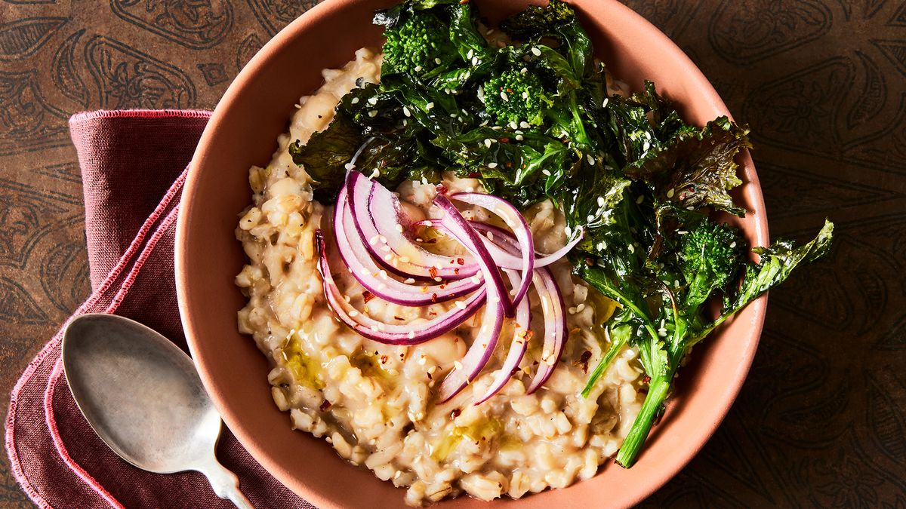
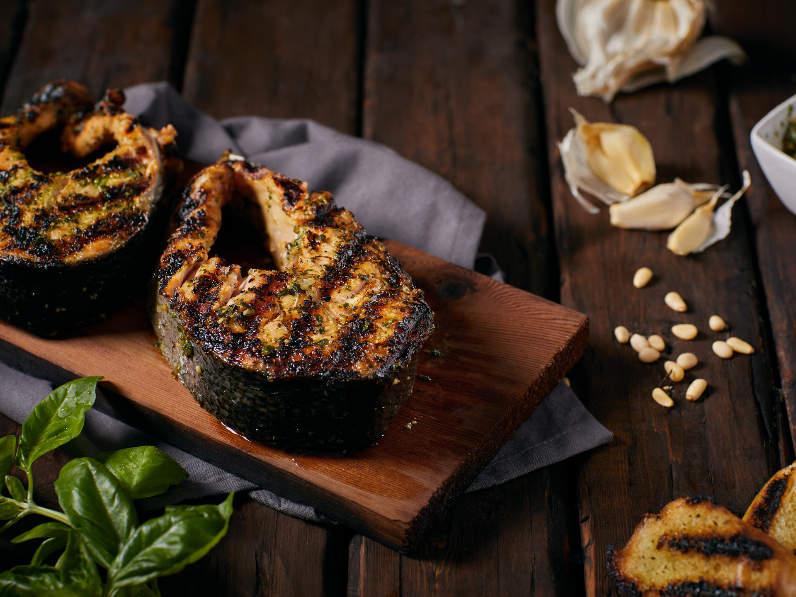
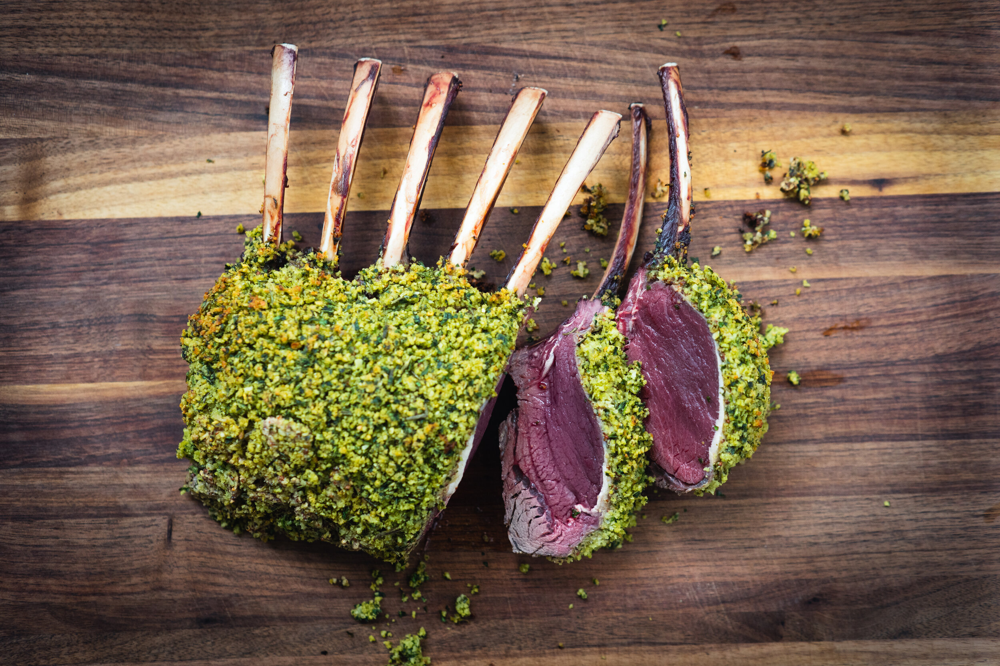
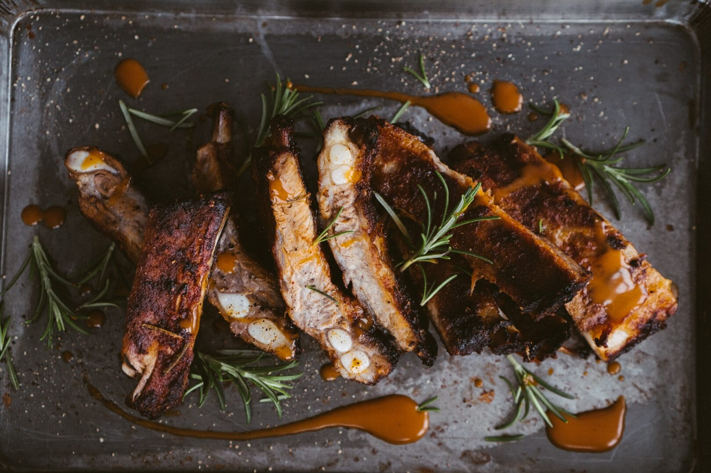
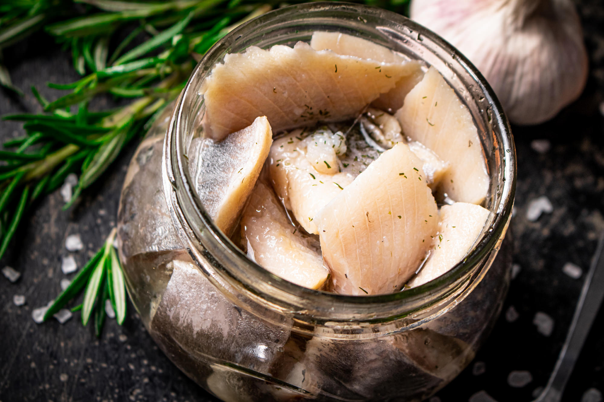
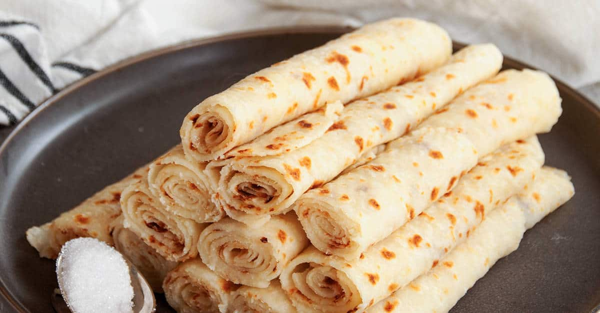

Welcome to our recipes page. Here, you'll find a collection of authentic Viking recipes, inspired by the ancient Norse traditions.
From hearty blood bread to flavorful stews and meads, each recipe is crafted to bring the spirit of the Viking Age to your table.
Whether you're looking to explore the rugged flavors of the North or simply want to try something new, these recipes will guide you on a culinary journey through the heart of Norse culture.
Prepare your feast, and may the strength of the gods be with you!

Barley Porridge
A thick porridge made with barley, carrots, turnips, and a touch of wild herbs.
Read More
Blood Bread (Blodbrød)
A traditional Viking bread made with animal blood, rye flour, and spices.
Read More
Fire-Roasted Salmon
Salmon fillets cooked over an open flame, seasoned with sea salt, dill, and juniper berries.
Read More
Herb-Crusted Venison
Venison steaks coated in a blend of wild herbs, seared and served with a rich berry sauce.
Read More
Honey-Glazed Pork Ribs
Tender pork ribs marinated in honey, herbs, and garlic, slow-cooked to perfection.
Read More
Mead-Infused Roasted Chicken
Whole chicken roasted with a glaze of mead, honey, and herbs.
Read More
Pickled Herring
A staple of Viking cuisine, herring fillets pickled with onions, dill, and spices.
Read More
Skyr with Wild Berries
A traditional Icelandic dairy dish, similar to yogurt, served with fresh wild berries and a drizzle of honey.
Read More
Viking Flatbread (Lefse)
A traditional flatbread made from potatoes, flour, and butter.
Read More